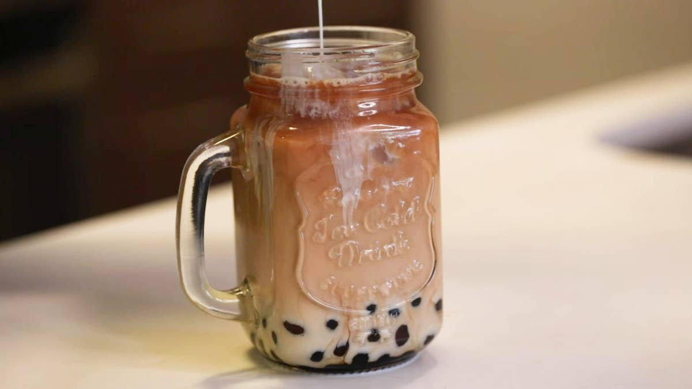

Boba Milk Tea

A cup of Boba milk tea is an excellent start to anyone's day!
Every cup of boba milk tea had this signature condensed milk flavor that fused
perfectly with the concentrated black tea. A lot of stands also use whole milk, so if
you’re not a fan of condensed milk, whole milk will also give you an authentic taste
of Taiwanese Boba Milk Tea! This drink is a thirst-quencher with a great caffeine kick.
If you prefer your drinks to be less sweet, reduce the amount of brown sugar syrup or
condensed milk during assembly. Don’t have muscovado sugar? Swap it out for brown sugar!
Ingredients
Serving size: 2 servings
Boba Pearls:
- 1/3 cup water, plus more as needed
- 1/4 cup dark muscovado sugar, or brown sugar
- 3/4 cup tapioca flour, plus more for dusting
Brown Sugar Syrup:
- 1 cup dark muscovado sugar, or brown sugar
- 1 cup water
Black Tea:
- 2 cups water
- 6 black tea bags
Milk Mixture:
- 3 tablespoons half & half
- 3 tablespoons sweetened condensed milk
Instructions:
- Make the boba pearls: Add the water and muscovado sugar to a medium pan
over medium-high heat. Cook until the sugar dissolves and the mixture
comes to a boil, 3–4 minutes. Add a bit of the tapioca flour and cook,
stirring constantly, until smooth. Add half of the remaining tapioca
flour and stir vigorously until a sticky dough forms. Turn off the heat
and add the remaining tapioca flour. Stir until the dough comes together
in a ball (not all of the flour will be incorporated at this stage). Let
cool slightly.
- Turn the dough out onto a clean surface. Knead until all of the flour is
incorporated and the dough is smooth, adding more flour or water as needed
if the dough is too sticky or too dry.
- Divide the dough into 2 portions. Roll the dough into long, thin ropes about
¼-inch (6.35 mm) thick, cutting in half crosswise if they get too long. Cut
the ropes into ¼-inch (6.35 mm) pieces. Roll each piece into a ball and place
in a bowl with a bit of tapioca flour. Dust the balls with the flour to prevent
them from sticking to each other.
- Bring a large pot of water to a boil. Shake off any excess flour from the
tapioca pearls, then add to the boiling water. Stir to separate the pearls, then
reduce the heat to medium-low. Simmer gently, stirring occasionally, for about
20 minutes, until cooked through.
- Meanwhile, make the brown sugar syrup: Add the muscovado sugar and water to a
small saucepan over medium heat. Cook until the sugar dissolves and the syrup
reduces slightly, 5–7 minutes. Pour the syrup into a large heatproof bowl.
- Once the pearls have cooked through, drain and rinse with cold water. Add the
pearls to the bowl with the brown sugar syrup and let sit for 30–60 minutes.
- Make the black tea: In a medium pot over high heat, combine the water and tea
bags. Bring to a boil, then remove the pan from the heat and let the tea cool
to room temperature.
- Make the milk mixture: In a small bowl or liquid measuring cup, whisk together
the half-and-half and sweetened condensed milk until combined.
- Assemble the boba milk tea: Add about ⅓ cup (80 ml) boba pearls and brown sugar
syrup to the bottom of each glass. Top with 1½ cups (225 grams) ice, then add
½ cup (240 ml) black tea and 3 tablespoons of the milk mixture. Stir with a
wide-opening straw, then serve.